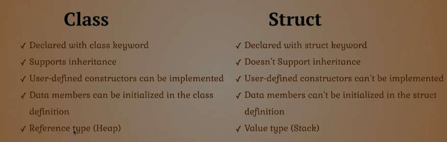

// Reading input from user.
string name = Console.ReadLine();
int num = int.Parse(Console.ReadLine()); // parse the string into integer.
# Handle if user doesn't provide an integer
int x = 0;
int.TryParse(Console.ReadLine(), out x);
// Printing the output
Console.WriteLine("Hello " + name);
Console.Write("Hello {0}", name);
byte ByteNumber = 123; // 1 byte (0 --> 255)
sbyte SByteNum = -12; // 1 byte (-128 --> 127)
short shortNumber = 2; // 2 bytes (-32,768 --> 32,768)
ushort UshortNum = 12; // 2 bytes (0 --> 65,535)
int intNumber = 10; // 4 bytes (-2,147,483,648 --> 2,147,483,648)
uint UintNum = 120; // 4 bytes (0 --> 4,294,967,295)
long LongNum = 213; // 8 bytes (-9,223,372,036,854,775,808 --> +9,223,...)
ulong ULongNum = 12; // 8 bytes (0 --> 18,446,744,073,709,551,615)
float floatNumber = 10.123f; // 4 bytes.
double douNumber = 121.234d; // 8 bytes.
decimal decNumber = 123m; // 16 bytes.
string name = "Mosaab";
char character = 'M';
bool condition = true;
// Let C# determine the type of data.
// using "var" keyword.
var test = 1000;
int intNumber = 10;
float floatNumber = 10.123f;
double douNumber = 121.234d;
string name = "";
# First way.
name = intNumber.ToString();
# Second way: using Convert class.
searialNo = Convert.ToInt32 (anyNo);
# Third way: direct casting.
searialNo = (int)anyNo;
# DateTime
DateTime myDate = new DateTime(2020, 5, 25);
DateTime myDate = DateTime.Today;
DateTime myDate = DateTime.Now;
# Show DateTime
Console.WriteLine(myDate.ToShortDateString()); // show only the date (short format).
Console.WriteLine(myDate.ToShortTimeString()); // show only the time (short format).
Console.WriteLine(myDate.ToLongDateString()); // (long format)
Console.WriteLine(myDate.ToLongTimeString()); // (long format)
# Formatted datetime.
string formattedDate = string.Format("Date is {0: yyyy MMMM dddd HH mm ss tt}", myDate);
Console.WriteLine(formattedDate);
if (num1 > num2)
{
Console.WriteLine ("Num1 is larger than Num2");
}
else if (num1 < num2)
{
Console.WriteLine ("Num1 is less than Num2");
}
else
{
Console.WriteLine ("Num1 equals Num2");
}
const double gravity = 9.8d;
string movieName = " Lord of the RingS ";
// Indexing
Console.WriteLine (movieName[12]);
// Trim
Console.WriteLine (movieName.Trim());
// Upper Case
Console.WriteLine (movieName.ToUpper ().Trim ());
// Lower Case
Console.WriteLine (movieName.Trim ().ToLower ());
// Length
Console.WriteLine (movieName.Length);
// Replace
Console.WriteLine (movieName.Replace ('l', 'L').Trim ());
// Index of
Console.WriteLine (movieName.IndexOf ('o'));
// Last Index of
Console.WriteLine (movieName.LastIndexOf ('o'));
// Substring
Console.WriteLine (movieName.Trim().Substring (5, 2));
// Remove after Index
Console.WriteLine (movieName.Trim().Remove (4));
// Insert
Console.WriteLine (movieName.Trim().Insert (0, "Added "));
// Ignore the special characters.
string path = @"C:\nami\tark";
// Don't ignore the special characters.
string path = "C:\\nami\\tark"
string name = "Mosaab";
Console.WriteLine("Welcome " + name);
Console.WriteLine("Welcome {0}", name);
Console.WriteLine($"Welcome {name}");
// For Loop
for(int i = 0; i <= 10; i++) {
Console.WriteLine (i);
}
// While Loop
int x = 5;
while (x <= 10) {
Console.WriteLine (x++);
}
double x = 4.226d;
// Ceiling
Console.WriteLine($"Ceiling: {Math.Ceiling(x)}");
// Floor
Console.WriteLine($"Floor: {Math.Floor(x)}");
// Round
Console.WriteLine($"Round: {Math.Round(x, 2)}");
// Truncate
Console.WriteLine($"Truncate: {Math.Truncate(x)}");
// Max
Console.WriteLine($"Max: {Math.Max(x, y)}");
// Min
Console.WriteLine($"Min: {Math.Min(x, y)}");
// Sqrt
Console.WriteLine($"Sqrt: {Math.Sqrt(y)}");
// POW
Console.WriteLine($"Pow: {Math.Pow(2, 2)}");
// Random Integer.
Random rand = new Random();
int x = 0;
x = rand.Next(1, 13);
Console.WriteLine("Month: " + x);
// Random Float
double y = 0;
y = rand.NextDouble() * 10;
Console.WriteLine("Random Double: " + y);
// Instansiate an array
int[] nums = new int[5] { 1, 2, 3, 4, 5 };
string[] days = { "Sun", "Mon", "Tue", "Wed", "Thur", "Fri", "Sat" };
// Loop over the arrays. using FOR
for (int i=0; i < nums.Length; i++) {
Console.WriteLine (nums [i]);
}
// Loop Over the array. using FOREACH.
foreach(var day in days) {
Console.WriteLine (day);
}
// Define the method outside of the Main method.
static void DisplayMessage() {
Console.WriteLine("Process is done");
}
// Define the method outside of the Main method.
static int Add(int x, int y) {
return x + y
}
// variable has to be initialized.
int x = 10;
// outside of the main method
static void ChangeX(ref int x) {
x = 200;
}
// to call the function as follows:
ChangeX(ref x)
// if variable is not instialized, we can use "out" keyword.
int x;
// outside of the main method.
static void Change(out int x) {
x = 200;
}
// use it like this.
Change(out x);
static void WelcomeGuest() {
Console.WriteLine("Something");
}
static void WelcomeGuest(string name) {
Console.WriteLine($"Welcome {name}");
}
// everthing is by default private
class Person {
string firstName;
public string lastName;
DateTime birthDate;
string country;
// Getter & Setter
public string FirstName {
get { return firstName; }
set { firstName = value; }
}
// Another way of Getter & Setter
public DateTime BirthDate { get; set; }
}
// instatiating the class in the main method
Person perOne = new Person();
perOne.FirstName = "Mosaab";
perOne.BirthDate = new DateTime(12, 1, 1996);
// everthing is by default private
class Person {
string firstName;
public string lastName;
DateTime birthDate;
string country;
// Constructor
public Person (string first, string last) {
firstName = first;
lastName = last;
}
}
// instatiating the class in the main method
Person perOne = new Person("Mosaab", "Muhammad");
static void Main() {
Person person = new Person();
person.SayHi(); // called from the static method.
}
static void SayHi() {
Console.WriteLine("Hi!, from static method");
}
class Person {
public void SayHi() {
// print something.
}
}
class Dog : Animal {
}
class MainClass
{
public static void Main (string[] args)
{
Shape[] shapes = new Shape[3];
shapes [0] = new Line ();
shapes [1] = new Circle ();
shapes [2] = new Triangle ();
foreach (var shape in shapes) {
shape.Draw ();
}
}
}
class Shape {
public virtual void Draw() {
Console.WriteLine ("I am a simple shape");
}
}
class Circle : Shape {
public override void Draw() {
Console.WriteLine ("I am a Circle");
}
}
class Triangle : Shape {
public override void Draw() {
Console.WriteLine ("I am a Triangel");
}
}
class Line : Shape {
public override void Draw() {
Console.WriteLine ("I am a Line");
}
}
Abstract Class is a concept or an idea not associated with any specific instance. "Can't be instantiated"
class MainClass
{
static void Main()
{
Line line = new Line ();
line.SayHi();
}
}
abstract class Shape
{
public void SayHi()
{
Console.WriteLine ("Hi from the abstract class.");
}
abstract public void Draw();
}
class Line : Shape
{
public override void Draw()
{
Console.WriteLine ("Hi Im a line");
}
}
// region is used to fold the code.
class Program {
public static void Main() {
Mercedes car = new Mercedes ();
car.DisplayInfo ();
}
}
#region Car = This is the solution for the car exercies
class Car {
#region Properties
private decimal price;
protected int maxSpeed;
public string color;
#endregion
protected decimal Price {
get { return price; }
set { price = value; }
}
public virtual void DisplayInfo() {
price = 10000;
maxSpeed = 300;
color = "Black";
Console.WriteLine ($"Default values: price is {Price}, max speed = {maxSpeed}, color = {color}");
}
}
class Mercedes : Car {
public override void DisplayInfo() {
base.DisplayInfo ();
base.Price = 15000;
base.color = "blue";
base.maxSpeed = 200;
Console.WriteLine ($"Overriden values: price = {Price}, speed = {maxSpeed}, color = {color}");
}
}
#endregion
// Animal class CAN'T be inherted.
sealed class Animal {
public int number = 200;
}
class Program {
public static void Main() {
// There's no need to instantiate a class.
Animal.GetAge ();
}
}
static class Animal {
// members must be static
static public string name;
// methods must be static
static public void GetAge() {
Console.WriteLine (DateTime.Now.Year - DateTime.Now.AddYears (-2).Year);
}
}
class Program {
public static void Main() {
Animal animal = new Animal ();
// instantiate a dog nested class.
Animal.Dog dog = new Animal.Dog ();
// instantiate a cat nested class.
Animal.Cat cat = new Animal.Cat ();
}
}
class Animal {
public string name;
public string country;
public class Dog {
public string breed;
public string nickName;
}
public class Cat {
public string CatName;
}
}
class Program {
public static void Main() {
Animal animal = new Animal ();
Console.WriteLine (animal.age + " " + animal.name);
}
}
partial class Animal {
public int age = 13;
}
partial class Animal {
public string name = "Max";
}
namespace Learning_C_Sharp
{
class Program {
public static void Main() {
System.Console.WriteLine ();
NameSpace.Animal animal = new NameSpace.Animal ();
animal.SayHi ();
}
}
}
namespace NameSpace {
class Animal {
public string animalColor;
public void SayHi() {
Console.WriteLine ("Hi from my own namespace");
}
}
}

namespace Learning_C_Sharp
{
class Program {
public static void Main() {
Employee emp = new Employee ("Mosaab", "Data Scientist", 9000);
Console.WriteLine ($"Name: {emp.name}, Job: {emp.job}, Salary: ");
}
}
struct Employee {
public string name;
public string job;
private decimal salary;
public Employee(string EmpName, string EmpJob, decimal EmpSalary) {
name = EmpName;
job = EmpJob;
salary = EmpSalary;
}
//public decimal Salary () {get; set;}
public void SayHi() {
Console.WriteLine ("Hi from the method in struct");
}
}
}